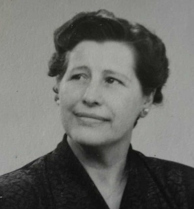

Född 23 apr 1939 i Linköpings domkyrkoförsamling (E) 1 .
Död 30 sep 2025 2 .
 F
[A]
Axel Vilhelm Lönnberg.
F
[A]
Axel Vilhelm Lönnberg.
Född 18 apr 1909 i Bleckstad, Drothem (E) 3 .
Död 12 sep 1979 i Kristinelund, Drothem (E) 4 .

M [A] Agnes Maria Lönnberg f Karlsson.Född 21 jul 1912 i Snörum, Mariehov, Drothem (E) 5 .
Död 27 jun 2002 i Birkagården, Söderköping, Sankt Laurentii (E) 4 .
Född 18 dec 1886 i Långserum, Yxnerum (E) 6 .
Död 1 jan 1974 på Enebymovägen 6, Gård 6, Kv Krusmyntan, Haga, Norrköping, Norrköpings Östra Eneby (E) 4 .
MFF Klas Ferdinand Karlsson.

Född 19 jun 1859 i Holmtebo, Ringarum (E) 7 .
Död 31 jan 1945 i Lunds jägmästaregård, Lund, Drothem (E) 4 .
MFM Hilda Sofia Karlsdotter.
Född 2 feb 1867 i Borrdalen, Fredriksnäs, Gryt (E) 8 .
Död 28 okt 1934 i Lunds jägmästaregård, Lund, Drothem (E) 4 .
Född 31 aug 1891 i Tingstad (E) 9 .
Död 21 dec 1973 på Enebymovägen 6, Gård 6, Kv Krusmyntan, Haga, Norrköping, Norrköpings Östra Eneby (E) 4 .